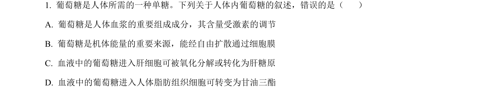
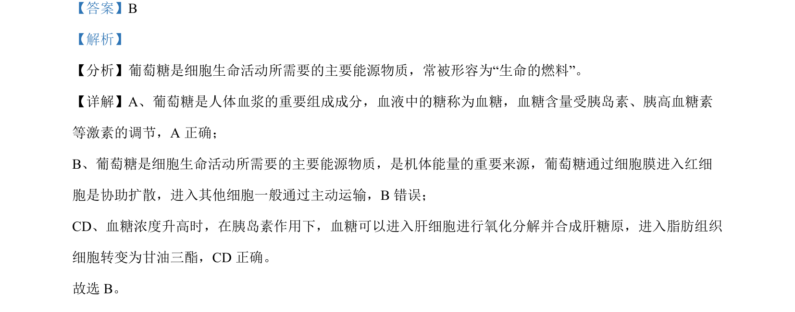

考点：物质跨膜运输 糖类代谢

本题为生物题，考查葡萄糖在人体内的运输方式及代谢过程。

📄 原 PDF 第 1 页：
素材/真题/吉林/2008-2024·（吉林）生物高考真题/2023年高考生物试卷（新课标）（解析卷）.pdf
【答案】B 【解析】 【分析】葡萄糖是细胞生命活动所需要的主要能源物质，常被形容为“生命的燃料”。 【详解】A、葡萄糖是人体血浆的重要组成成分，血液中的糖称为血糖，血糖含量受胰岛素、胰高血糖素 等激素的调节，A 正确； B、葡萄糖是细胞生命活动所需要的主要能源物质，是机体能量的重要来源，葡萄糖通过细胞膜进入红细 胞是协助扩散，进入其他细胞一般通过主动运输，B错误； CD、血糖浓度升高时，在胰岛素作用下，血糖可以进入肝细胞进行氧化分解并合成肝糖原，进入脂肪组织 细胞转变为甘油三酯，CD 正确。 故选 B。